Обзор
В этом уроке мы узнаем, как работают основные элементы солнечного освещения и Environment Editor, создавая разнообразные натуралистичные и потусторонние образы. Мы будем использовать Environment Editor (Инструменты → Environment Editor) и естественного света (солнечного света) на протяжении всего этого урока. Environment Editor и освещение окружающей среды — это большая тема, поэтому эта серия уроков достаточно длинная, чтобы быть подробной.
Мы предлагаем вам просмотреть оглавление, чтобы найти конкретные темы, хотя, если вы новичок в CRYENGINE, было бы полезно проработать эту информацию в том порядке, в котором она представлена, поскольку она знакомит с отдельными концепциями, прежде чем рассматривать варианты использования, включающие каждую настройку. Лучший способ изучить эти концепции — прочитать и протестировать настройки на своих уровнях, а не пытаться переварить весь этот материал за один присест. Также рекомендуем просмотреть прилагаемые видеоуроки.
Environment Editor Дизайн
При первом просмотре может показаться, что Environment Editor предоставляет огромное количество параметров для моделирования того, что может показаться простым на первый взгляд: цвет неба, положение и интенсивность солнца и луны, форма облаков и т. д. Фактически, Environment Editor построен на математической модели для моделирования того, что вы видите на планете Земля; как таковой, он смоделирован на основе реальной физики, но упрощен до такой степени, что правдоподобное моделирование может быть достигнуто в реальном времени. Другими словами, хотя элементы управления более сложны, чем выбор образцов «цвета неба», «цвета солнца» и т. д., на самом деле существует минимальное количество параметров, позволяющих точно имитировать освещение земного типа без ненужных сложностей, а также предоставляющие инструменты, достаточно гибкие, чтобы дать вам возможность создавать внешний вид, непохожий ни на что, что можно увидеть на планете Земля.
Динамическое и статическое время суток и редактор кривых
Прежде чем создавать предустановку среды, важно понять роль редактора кривых. Редактор кривых используется для ключевые кадры изменения в Environment Editor Переменные когда динамичный желательно время суток. Однако даже если вы хотите создать static время суток, вы по-прежнему будете устанавливать ключевые кадры, поскольку любое изменение переменной будет устанавливать для нее ключевой кадр. в настоящее время. Другими словами, все значения переменных связаны со временем суток.
Поскольку зеркальные отражения полагайтесь на предварительно сгенерированные кубические карты static, достижение динамического времени суток требует большей сложности и создания сценариев для смешивания кубических карт. По этой причине вы можете отказаться от использования динамического времени суток на своем уровне. В этом случае вы можете перетащить линейку времени в редакторе кривых в любое положение, которое будет похоже на то, что вы планируете создать, или просто оставить ее на 12:00 по умолчанию, а ее панель после этого будет закрыта и проигнорирована. (Например, Hunt Showdown использует 12:00 в качестве времени суток для всех своих настроек среды, которые охватывают широкий диапазон дневных и ночных настроек. Это также дает дополнительное удобство, заключающееся в том, что вам не придется беспокоиться о поиске времени суток, в которое вы устанавливаете все свои ключевые кадры, поскольку 12:00 — это время по умолчанию для новых настроек.)
Чтобы узнать, как использовать динамическое время суток, см. Создание 24-часового цикла.
Однако, когда вы только начинаете учиться пользоваться Environment Editor, прокрутка шкалы времени может оказаться весьма полезной. Редактор кривых и нажмите Переменная имена, чтобы увидеть, как значения в каждом ключевом кадре создают различные виды: день, рассвет, восход солнца, полдень, сумерки, ночь и т. д. (Вам нужно будет увеличивать и уменьшать масштаб, чтобы найти путь сплайна между ключевыми кадрами в редакторе кривых.)
Имейте в виду, что смена времени суток не меняет внешний вид освещения и окружающей среды; дело в том, что значения переменных были установлены в различных точках временной шкалы, создавая ключевые кадры в редакторе кривых. Другими словами, вы можете создать темную ясную ночь с яркими звездами даже в полдень или яркий солнечный день в полночь. Это просто вопрос установки параметров на нужные значения.
Таким образом, хотя вы, безусловно, можете прокрутить Редактор кривых до определенного времени суток и использовать значения этого времени в качестве основы для создания аналогичного вида, вы также можете просто игнорировать Редактор кривых и создать свой вид любой время суток. Закрытие редактора кривых в качестве первого шага — хороший способ избежать ошибки изменения времени суток после того, как вы начали настраивать значения, поскольку в конечном итоге вы получите ключевые кадры переменных в разное время суток, а не в одно и то же время.
Мы рекомендуем печатание значение времени в поле «Текущее время» (попробуйте Ctrl А чтобы выбрать все четыре цифры), которые ваша команда желает стандартизировать, прежде чем вы закроете редактор кривых и начнете настраивать ключевые кадры, изменяя значения переменных. Перетаскивание линейки времени устанавливает время суток с гораздо более высокой степенью точности, чем часы и минуты (пять знаков после запятой), что требует полного увеличения масштаба, чтобы увидеть точное положение ключевого кадра.
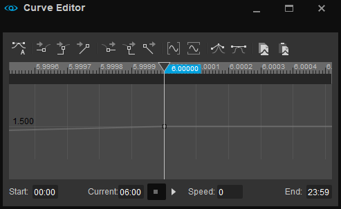
Ввод текущего времени суток упрощает эту задачу: например, ввод «13:00» установит время дня ровно 13:00, даже если дополнительная точность не отображается в полях «Время начала», «Текущее» и «Окончание дня».
Остальная часть этого руководства будет посвящена созданию пресетов static. без динамическое время суток.
Создание и назначение новой предустановки среды
Первым шагом после создания нового уровня является назначение ему предустановки среды.
Давайте создадим и назначим наш первый пример: солнечный день:
- В Браузер объектов Environment Editor панель, перейдите к библиотеки\EnvironmentPresets, щелкните правой кнопкой мыши в пустой области и выберите Новый актив → Окружающая среда. Назовите его "sunny_afternoon" или как хотите. Нажмите OK. Пресет создан.
- Открыть Инструменты → Редактор уровней → Настройки уровня → Предварительные настройки среды. Вы увидите, что предустановка среды под названием default.env по умолчанию назначается каждому новому уровню. Он включен в активы движка и не может быть просмотрен или изменен. Давайте отменим его назначение: нажмите на кнопку 1 кнопка рядом с Пресеты и выбери Удалить все.
- Чтобы назначить предустановку среды для уровня, просто перетащите ее из браузера ресурсов в окно просмотра перспективы. Вы можете убедиться, что предустановка среды назначена, проверив Инструменты → Редактор уровней → Настройки уровня.
- Сохранить ваш уровень.
- Щелкните предустановку среды в браузере ресурсов Environment Editor, чтобы активировать свой новый пресет «sunny_afternoon» и загрузите его настройки для дальнейшего изменения.
Мы настроим этот пресет, и его текущие значения будут отражены на вашем уровне. Имейте в виду, что, как и во многих других инструментах CRYENGINE, вам нужно нажать Ctrl + С в то время как Environment Editor – это активное окно чтобы сохранить изменения в предварительной настройке активной среды. Это делает нет сохранить уровень; это необходимо сделать с помощью Ctrl + С или Файл → Сохранить с область просмотра в качестве активного окна.
Если ваш уровень пуст, заполните его какой-нибудь быстрой геометрией или растительностью или используйте Designer Tool, чтобы быстро создать в белом блоке что-то, приближающееся к желаемому дизайну. Это также хорошее время для настройки (лепки или импорта, а затем рисования) вашей карты высот с помощью редактора ландшафта. Пока у вас нет представления о том, как выглядит ваш уровень, какие материалы вы используете, и пока у вас нет объектов, отбрасывающих тени, будет сложно создать подходящее освещение.
TIP: прежде чем делать что-либо еще, вот два рекомендуемых параметра для настройки любой предустановки среды:
- Переменные → HDR → Цветовой баланс по умолчанию установлен желтый оттенок. Целесообразно полностью обесцветить цвет, поскольку это последний шаг в процессе создания изображения, который повлияет на все остальные настройки окружающей среды. Вы можете гораздо точнее настроить цветовую палитру сцены, используя цветокоррекция.
- HDR адаптация глаз по умолчанию установлено, что он совместим с версиями движка до CRYENGINE 5. Если вы используете CRYENGINE 5 или более позднюю версию, переключитесь в новый улучшенный режим, набрав r_HDREyeAdaptationMode 1 в консоли (и навсегда установив его в autoexec.cfg или другом файл конфигурации).
Ключевые параметры освещения: Солнце, небо, туман
Есть три ключевых фактора, которые оказывают глубокое влияние на освещение (в частности, освещение с помощью солнца):- Солнце
- Небо/окружающий свет
- Туман
Обратите внимание: хотя мы настоятельно рекомендуем вам использовать объемный туман поверх старого, простого эффекта тумана по причинам, которые будут подробно описаны здесь, мы начнем с использования эффекта старого тумана только в демонстрационных целях. Полезно понять обе системы и посмотреть, как они сравниваются. Также возможно, что вы решите использовать эффект старого тумана в более простых игровых проектах или для причины производительности.
Экологическое освещение: краткий обзор
Прежде чем мы разберем по частям то, что представляет собой окружающую среду, давайте кратко рассмотрим, что контролирует дневной свет в Environment Editor. Мы просто рассмотрим три наиболее важных фактора: солнце, небо и туман:
Убедитесь, что объемный туман отключен (e_VolumetricFog 0 в консоли)
Отодвиньте камеру от местности по горизонтали и над ней.
Если ваша местность плоская, сгенерируйте изменение высоты местности с помощью редактора ландшафта: Файл → Создать ландшафт: принять значения по умолчанию, чтобы создать несколько гор. Ваша камера может оказаться под недавно поднятой местностью; в этом случае просто переместите его вверх.
Давайте включим тени от ландшафта: Настройки уровня → Состояние окружения → Солнечные тени от местности
Теперь давайте переместим солнце ниже по небу, чтобы вы могли лучше видеть текстуру местности. В Environment Editor под Константы → Солнце, отключить Солнце связано с TOD и изменить долгота чтобы 25 или меньше, как вам нравится. Теперь уровень выглядит примерно так:
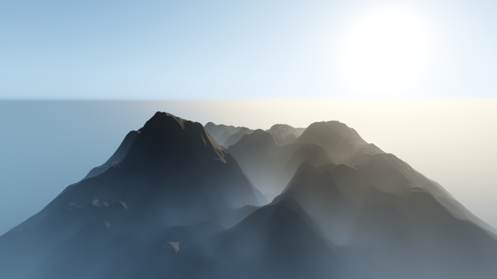
Теперь давайте отключим части одну за другой, чтобы увидеть, какой вклад они вносят. Для начала выключим солнце: Установите Переменные → Солнце → Интенсивность солнца (люкс) чтобы 0. Ваш уровень должен выглядеть так:
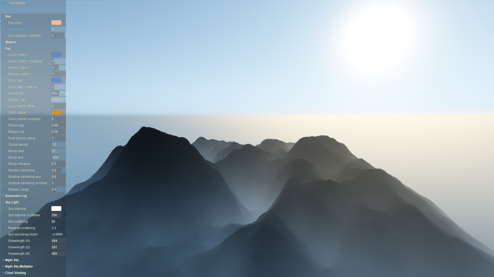
Вы можете быть удивлены тем, что разница заключается в таком незначительном изменении освещения на местности. Мир не потемнел, на небе все еще можно увидеть солнечный шар, а небо (которое представляет собой всего лишь атмосферу Земли, рассеивающую солнечный свет) по-прежнему такое же яркое. В отличие от природы, в CRYENGINE у вас есть отдельный контроль над каждым из этих элементов.
Давай почти выключим световой люк :си др. Переменные → Небесный Свет→ Множитель интенсивности солнца чтобы .1. Небо станет очень темным, но вы все равно увидите в небе небольшой солнечный шар. Ваш уровень должен выглядеть так:
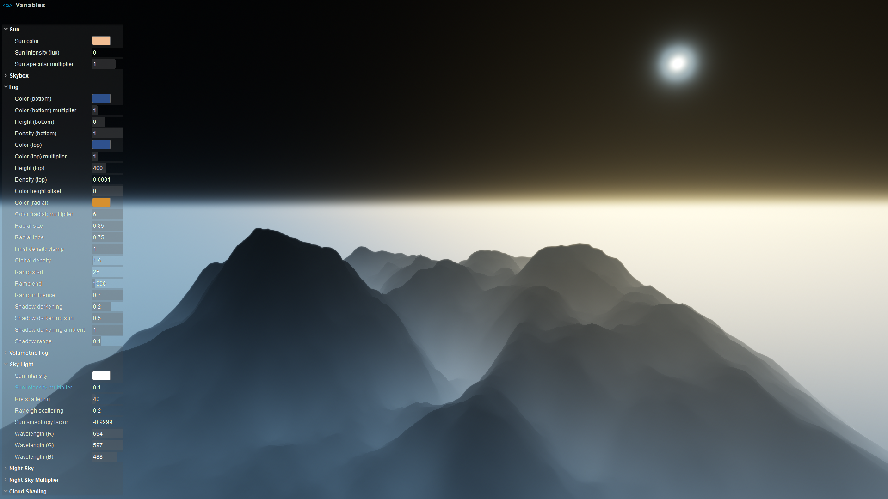
Измените Множитель интенсивности солнца чтобы 0, и небо и солнечный шар станет полностью черным. Вы эффективно предотвратили захват земной атмосферой солнечного света, поэтому небо выглядит черным, а местность и океан — нет. Теперь нам нужно уточнить ключевую роль, которую играет туман:
Переместите камеру вниз к местности. Осмотревшись вокруг, вы убедитесь, что местность полностью черная, но если вы посмотрите вверх, вы можете быть удивлены, увидев, что над вами мир кажется голубым небом, хотя и немного темным. Измените Переменные → Туман → Множитель цвета (верхний) до 4, и это голубое «небо» будет выглядеть почти нормально.
Хотя это не рекомендуемый способ создания иллюзии неба, важно понимать, что игрок видит то, что находится над ним, через слой тумана, который обычно настроен на максимальную плотность на высоте местности, и что цвет тумана в этом случае скрывает тот факт, что небо над ним на самом деле абсолютно черное. Даже если вы используете более типичное значение для Переменные → Небесный Свет → Множитель интенсивности солнца, Переменные → Туман → Множитель цвета (верхний) Переменная будет иметь глубокое влияние на то, что игрок воспринимает как небо.
Переместите камеру обратно над местностью, чтобы вы могли видеть черное небо, а также местность с плывущим по ней туманом. Кажется, что туман улавливает или излучает свет, часть его — синий, часть — золотой, но откуда берутся эти огни?
на самом деле есть шесть источники света в этом эффекте тумана!
- Туман → Цвет (радиальный): тЗолотой свет исходит от этого цвета, который имитирует рассеянный свет вокруг солнце. Это Образец цвета определяет цвет и яркость света, рассеянного от солнца сквозь туман.
- Туман → Цветовой (радиальный) множитель определяет, насколько интенсивно оно применяется. (1 = 100%, хотя вы можете умножить его до 16, что составляет 1600% цвета образца).
- Аналогично этому, голубоватый свет устанавливается в вертикальном диапазоне четырьмя настройками: Туман → Цвет (внизу) и Туман → Множитель цвета (нижний) определить цвет и интенсивность в нижней части диапазона, создавая градиент тумана к Туман → Цвет (вверху) и Туман → Множитель цвета (верхний) значения в верхней части вертикального диапазона тумана.
Удалим золотое свечение: устанавливаем Туман → Цветовой (радиальный) множитель чтобы 0. (В качестве альтернативы вы также можете установить → Цвет (радиальный) на чисто черный, чтобы добиться того же.)
Если вы посмотрите на настройки тумана, отмеченные снизу и вверху, вы увидите, что по умолчанию эффект тумана простирается от 0 до 400 м в высоту, постепенно уменьшаясь от 100% до 0,0001% плотности снизу вверх. Еще одно интересное замечание: широта и долгота Константы → Солнце по-прежнему будут контролировать направление света внутри тумана – даже если интенсивность солнечного света снижена до нуля!
На изображении ниже размещен туман. выше ландшафт, а градиент плотности был изменен по сравнению с обычными значениями, исчезая со 100% на топ до 0,0001 в дно. Интенсивность солнца (люкс) равна 0. Как видите, хотя туман и светится ярко, он на самом деле не освещает местность, как это сделал бы источник света. Но когда вы просматриваете объекты или местность через полупрозрачный туман, его яркость влияет на внешний вид объектов и местности внутри него, фактически не освещающий их детали. Точнее, из-за тумана все становится все более туманным, если смотреть на него издалека. Если бы туман был фиолетовым, все в конечном итоге выглядело бы фиолетовым, если бы между камерой и объектами или местностью было достаточно тумана.
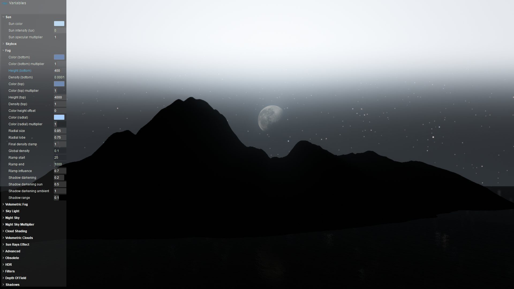
Давайте отключим туман в верхней части диапазона: установите Туман → Плотность (внизу) чтобы Плотность (сверху). Вершины ваших гор будут немного темнее:
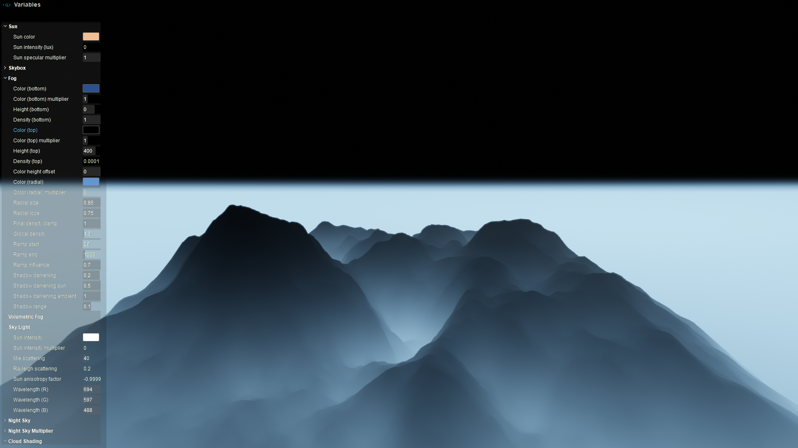
Наконец, если вы устраните туман в верхней части диапазона, установив Туман → Цвет (внизу) чтобы черный, вы наконец увидите совершенно темный мир. Хотя вы вряд ли будете использовать такие настройки, теперь вы знаете основные настройки и можете восстановить некоторую интенсивность солнца и тумана, например, для достижения ночного вида. В следующей части этого урока мы углубимся в настройки и научимся создавать реалистичные ночные и дневные образы.
Теперь, когда вы кратко ознакомились с основными компонентами, из которых состоит освещение на уровне, давайте подробно рассмотрим, как они работают, как лучше всего их использовать и как на их основе основываться. Вы можете отменить или отменить все изменения в предустановке среды (щелкните ее правой кнопкой мыши в Браузер объектов Environment Editor и выбери Отменить изменения) или создайте новый и присвойте его своему уровню.
Солнце в глубине
Первое понятие, которое вам нужно понять о солнце, заключается в том, что свет произведено солнцем (видимое, что оно освещает ваш уровень и рассеивается в атмосфере) контролируется отдельно от видимого появления солнца шар сам. Хотя в реальном мире они всегда синхронны, в движке они управляются отдельно. Это дает вам гибкость в выполнении практических задач, таких как скрытие солнечного шара при использовании облачной текстуры неба, а также создание фантастических игровых миров с солнцами и небом, непохожими ни на что знакомое землянам. Но это также означает, что для создания реалистичных условий, подобных земным, вам необходимо установить множество параметров.
Положение Солнца
Когда вы создаете новую предустановку среды, солнце по умолчанию располагается прямо над головой (90° долготы), как если бы вы стояли на экваторе Земли в 12:00. Вы заметите, что тени находятся прямо под объектами, что затрудняет оценку их формы. Одна вещь, которую вы, возможно, захотите сделать, чтобы вам было легче видеть, как вы работаете над своим уровнем (даже если вы не готовы завершить настройку освещения), — это просто перейти к Константы → Солнце , отключить Солнце связано с TOD (поскольку мы хотим вручную контролировать положение солнца и не зависеть от времени суток) и устанавливаем Долгота до значения меньше 90, чтобы переместить солнце ниже по небу. Это удлинит ваши тени и облегчит просмотр ваших сеток и ландшафта.
Цвет и интенсивность солнца
Эти параметры, найденные под Переменные → Солнце, контролировать цвет и интенсивность свет производимое солнцем (то, что вы видите освещающим вашу местность), а не внешний вид солнечный шар сам. Яркость выражается с помощью люкс масштаб освещенности. Яркость по умолчанию намного ярче, чем реальный солнечный свет на планете Земля, и не обеспечит физически точную яркость в рамках рекомендуемого нами рабочего процесса PBS/PBR (физическое затенение/рендеринг). См. этот урок для получения подробной информации о расчете реалистичных уровней освещенности.
Кроме того, хотя вы можете устанавливать цвет солнечного света по своему усмотрению, имейте в виду, что если вашей целью является реализм, на его цвет следует влиять относительно положения солнца на небе относительно камеры. Почему? Поскольку лучи света проходят между солнцем и камерой (или вашими глазами), и чем ближе этот путь к поверхности Земли, тем плотнее атмосфера и тем сильнее рассеивается красноватый свет (производя покраснение, которое вы видите на восходе и закате). Это сильно отличается от синего рассеяния, которое вы видите в полдень. Поэтому желательно окончательно определить положение солнца. раньше вы устанавливаете его цвет.
Для начала решите, хотите ли вы создать дневной или ночной образ, и настройте позиция и интенсивность Солнца соответственно. Интенсивность солнца — это лишь один из аспектов, поэтому на данный момент просто введите приблизительное значение, а позже вы точно настроите внешний вид, используя световые компоненты, датчики окружающей среды и, возможно, SVOGI. Вам также потребуется настроить яркость неба, а для ночного просмотра — видимость луны и звезд.
Мы вернемся, чтобы установить внешний вид солнца шар после того, как мы установили внешний вид неба, поскольку движок обеспечивает контроль над его внешним видом независимо от излучаемого им света.
Небо в глубине
Хотя теоретически можно было бы предоставить упрощенный интерфейс для окружающего освещения, например, единую палитру цветов для «цвета неба», представленные вам элементы управления основаны на реальной науке о небе, которое вы в конечном итоге видите. Хотя это означает, что вам придется иметь дело с некоторыми сложностями, лежащими в основе науки, у нее есть то преимущество, что вы можете создавать очень реалистичное (а также чисто фэнтезийное) небо.
Небо Земли, определение
Когда дело доходит до того, что вы воспринимаете как небо, полезно помнить о нескольких вещах:
- «Небо», которое вы видите, по сути, полушарие (при условии, что у вас есть беспрепятственный обзор), который не является физическим объектом или твердой поверхностью; это свет, который улавливается и рассеивается атмосферой Земли. (около 23% солнечного света, попадающего на Землю) Частицы в атмосфере освещаются, создавая широкий спектр цветов, в зависимости от состава атмосферы и положения Солнца относительно точки обзора.
- В середине дня небо выглядит синий потому что атмосфера Земли рассеивает более короткие волны синего цвета больше, чем более длинные волны. В первую очередь это вызвано тем, что известно как Рэлеевское рассеяние, вызванный в основном более мелкими частицами в атмосфере. Именно поэтому солнце кажется с Земли слегка желтым, поскольку это противоположность синему цвету, который вычитается из белого света, излучаемого Солнцем. (Интересно отметить, что если бы у вас была возможность совершить путешествие в космическое пространство за пределы атмосферы Земли, вы бы увидели, что Солнце кажется белым, а не желтым.)
- Во время восхода и заката солнечные лучи проходят через плотную атмосферу, ближайшую к поверхности Земли, и достигают зрителя. Это приводит к еще большему рассеянию, но поскольку большая часть синего и зеленого света рассеивается, не дойдя до зрителя, в конечном итоге вы видите характерные теплые цвета восхода и заката.
- Рассеяние Ми вызывается более крупными частицами в воздухе, аэрозолями, такими как пыль, и загрязнением. В отличие от рэлеевского рассеяния, оно имеет тенденцию рассеивать все длины волн света одинаково. Таким образом, вместо изменения цвета рассеяние Ми создает слегка серое небо в пасмурный день, а также создает большой белый ореол вокруг Солнца.
- На другой стороне земной атмосферы всегда находится чернота космического пространства, а также планет, звезд и ночных физических объектов, видимых с Земли.
- Чем выше ваша высота над поверхностью Земли, тем тоньше атмосферу, которую вы видите, когда смотрите вверх, и тем ближе вы приближаетесь к черноте космоса и истинному, неизменному цвету солнца. Другими словами, точка обзора игрока будет влиять на то, как будет выглядеть небо (и солнце).
- Небо не имеет однородного цвета или тона, когда вы смотрите на видимое полушарие, потому что свет, пойманный в результате рассеяния, меняется, когда вы смотрите в сторону Солнца или Луны или в сторону от них.
- Когда вы смотрите вниз на линию горизонта, цвет неба меняется, потому что атмосфера меняется. самый толстый наиболее близкие к поверхности Земли, а также содержащие другой состав (например, большую часть водяного пара, облаков и пыли). Это изменение состава и плотности атмосферы образует градиент от линии горизонта к точке прямо над головой. Он также меняет цвет, когда вы смотрите по сторонам в сторону солнца или луны и в сторону от него.
- Атмосфера Земли на самом деле простирается на высоту до 10 000 км от поверхности, но 99% ее находится в пределах 16 км (10 миль) от поверхности в первых двух слоях (тропосфере и стратосфере). Этот солнечный свет, пойманный здесь, представляет собой то, что мы видим как свет в небе, и в дополнение к отраженному солнечному свету включает в себя окружающий свет на Земле.
Надеюсь, это поможет объяснить, почему в Environment Editor нет просто кнопки «Цвет неба». Небо гораздо сложнее, чем одноцветное!
Элементы неба CRYENGINE
В Environment Editor используются термины, соответствующие науке, лежащей в основе того, как выглядит небо Земли, но при этом скрываются дополнительные сложности, которые не стоило бы задавать (например, состав пяти различных слоев, составляющих атмосферу). Когда вы освоите эти концепции, вы сможете получить любой образ, который ищете, будь то натуралистический или полный фэнтези.
Возможно, будет полезно подумать о том, что вы воспринимаете как «небо» в CRYENGINE, как о слои. От задом наперед, это:
- Космическое пространство - тьма пустого пространства, звезды и текстура луны. Здесь все контролируется через Переменные → Ночное небо ценности.
- Skylight – свет, заключенный в атмосфере Земли. Это контролируется Переменными → Sky Light. Однако, в отличие от Земли, она бесконечна и не уступает место черноте космоса. Какое бы значение вы здесь ни установили, вы увидите то, что вы увидите независимо от того, насколько высоко поднимается камера, хотя плотность глобального тумана будет уменьшаться по мере вашего продвижения вверх и влиять на ваше восприятие того, что кажется «небом».
- А SkyBox текстура, если она используется. При непрозрачности 1 (100%) он полностью покрывает цвет неба или может оставаться полупрозрачным.
- Солнечные лучи. Даже если небесный ящик с полной непрозрачностью закрывает ваш солнечный шар, его рассеянные лучи все равно будут видны перед ним. (Переменные → Эффект солнечных лучей)
- Объемные облака, если включено (r_VolumetricClouds 1). Высота объемных облаков полностью зависит от вас, поэтому они могут плавать над или посреди вашего вертикального диапазона тумана.
- Туман (глобальный): задается с помощью Переменные → Туман или Переменные → Объемный туман.
- Объемы тумана (локальные объемные компоненты тумана), если включено (e_VolumetricFog 1). Хотя, вероятно, не так уж полезно думать о локальных объемах тумана, таких как туман на озере, как о части неба, игрок на местности всегда смотрит на небо через любые объемы тумана (поскольку все они расположены над местностью), поэтому можно утверждать, что они (по крайней мере, те, которые находятся на более высокой стороне) влияют на восприятие игроком «неба».
Как мы увидим, из них туман обычно играет большую роль в создании восприятия неба игроком.
Ключевые настройки неба
Небо эффективно генерируется этими параметрами. Имейте в виду, что высота солнца над горизонтом также оказывает сильное влияние.
- Переменные → Небесный свет → Интенсивность солнца: несмотря на название, управляет не только солнечным шаром, но и яркость и цвет из небо. Это независимый цвета и яркости, заданных в настройках «Переменные → Солнце», поэтому ничто не мешает вам создавать неестественные, но, возможно, интересные миры (см. примеры ниже). Ключевая концепция, которую необходимо понять, заключается в том, что, как вы видели в нашем кратком обзоре, даже если вы установите значение 0, чтобы затемнить небо, игроки, глядя вверх сквозь любой туман, увидят именно туман, а не небо. Туман закрывает игроку обзор настоящего неба, фактически становясь тем, чем игроки увидеть как небо.
- Переменные → Sky Light → Множитель интенсивности солнца: не то, насколько силен солнечный свет, а насколько эффективно он Небесный Свет → Интенсивность солнца устанавливает цвет и яркость неба. Установка значения 0 делает небо черный, несмотря ни на что Небесный свет → Интенсивность солнца установлено на. Но это также способствует видимости самого солнечного шара. 0 = невидимое солнце. .0001 = очень маленькое, но видимое солнце (при условии, что Sky Light → интенсивность Солнца не черная) и почти черное небо.
- Переменные → Рэлеевское рассеяние: установка плотности атмосферы позволяет эффективно определить цвет неба, контролируя, какие длины волн света рассеиваются в атмосфере. (Имейте в виду, что лунный свет — это всего лишь отраженный солнечный свет.) При значении по умолчанию 2, вы увидите реалистичные цвета Земли: голубое небо далеко от горизонта, теплые красно-оранжево-желтые цвета близко к горизонту. Высшее ценности делают атмосферу более плотный, сдвигая небо в сторону красный и желтый. Более высокая плотность также означает, что вам нужно будет увеличить множитель интенсивности Sky Light → Sun, чтобы больше света могло проникать и освещать небо. Меньший ценности создают атмосферу менее плотный, пропуская больше света и смещая небо в сторону синий. Небольшие изменения будут иметь здесь большое значение, а значения выше 40-50 создадут настолько плотную атмосферу, что через нее будет проходить мало света. В большинстве сред вы можете просто оставить значение по умолчанию 2. Однако, если вы пытаетесь воссоздать атмосферу неземного мира, изменение этих значений, чтобы повлиять на плотность атмосферы (и, следовательно, на рассеянные цвета), одновременно компенсируя эту плотность путем настройки множителя интенсивности Солнца, вы получите широкий спектр цветов, включая цветные полосы.
- Переменные → Рассеяние Ми: контролирует эффекты рассеяния более крупными частицами, близкими к длине волны видимого света. Визуально это не будет иметь такого большого значения, как регулировка рэлеевского рассеяния. поэтому мы предлагаем оставить значение по умолчанию.
Самый простой способ установить цвет неба — сохранить значения по умолчанию в этом разделе и просто менять положение солнца на небе, чтобы получить реалистичные изменения цвета неба. Однако вы можете создать множество образов, играя с этими значениями.
Примеры небесного освещения
Этот пример демонстрирует, как можно независимо задать цвета неба и солнца: Солнце → Цвет солнца установлено на оранжевый, который вы можете видеть, освещая местность. Но Небесный Свет → Интенсивность солнца был установлен на зеленый цвет, который не мог возникнуть естественным образом с этой точки зрения (если только кому-то не удалось сделать атмосферу очень зеленой).
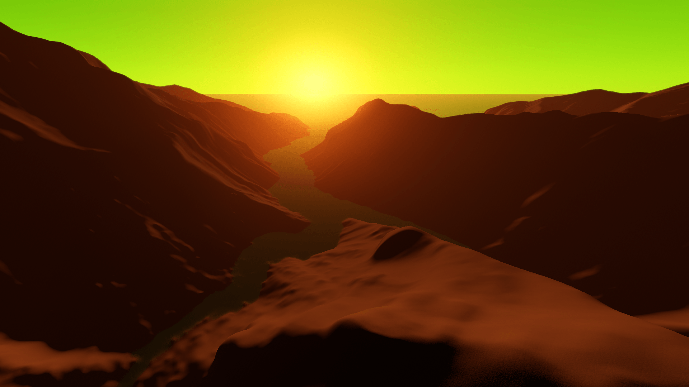
В примерах ниже используется только световой люк (Солнце → Интенсивность Солнца (люкс) = 0), при этом параметр Sky Light → Интенсивность Солнца установлен на белый цвет, а туман полностью отключен.
Множитель интенсивности Солнца = 200, Рэлеевское рассеяние = 6
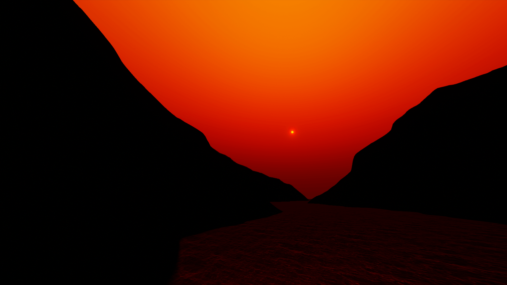
Множитель интенсивности Солнца = 200, Рэлеевское рассеяние = 20
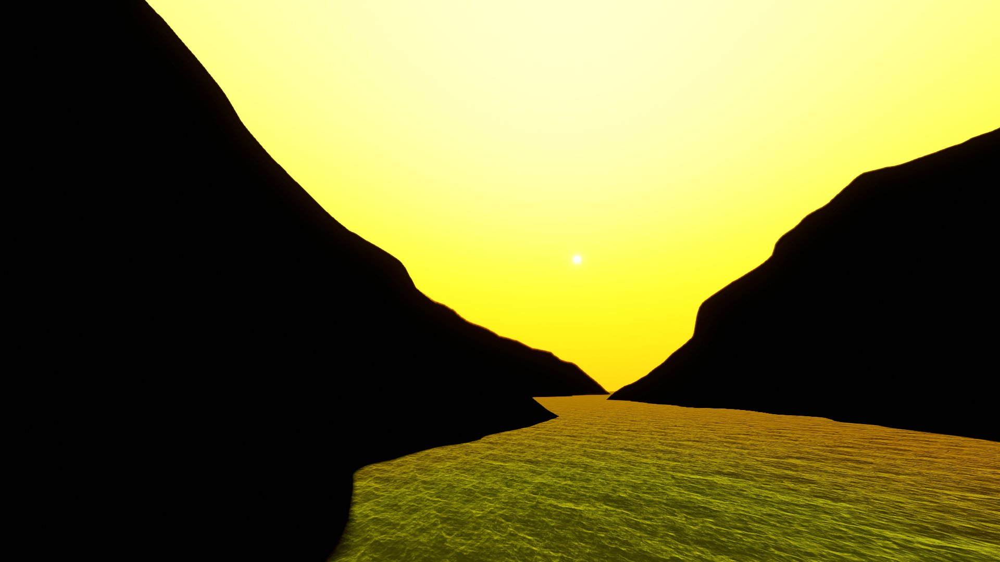
Множитель интенсивности Солнца = 1000, Рэлеевское рассеяние = 310
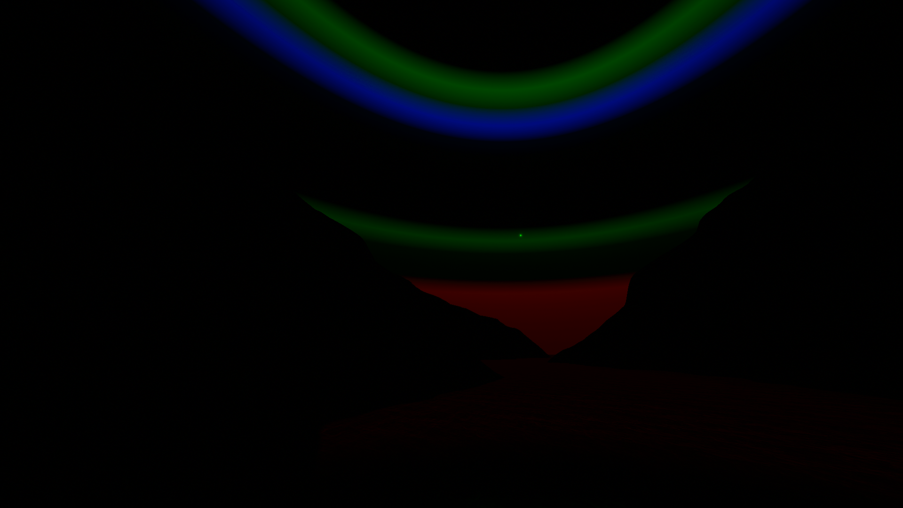
Множитель интенсивности Солнца = 8, Рэлеевское рассеяние = 1
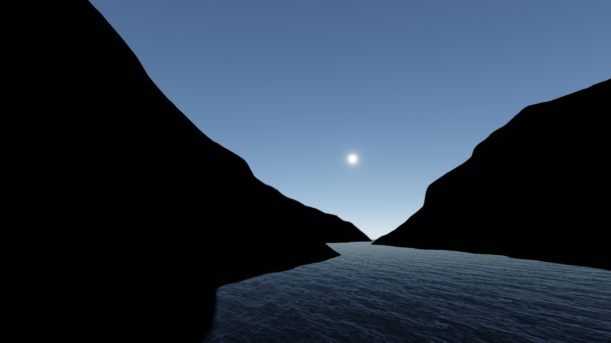
Вариант Sky Box
Есть один очень простой способ обойти все переменные, влияющие на небо: просто используйте SkyBox - бесшовная фотография реального полушария неба с высоким разрешением static. Назначьте материал скайбокса в Константы → Skybox и установите SkyBox → Непрозрачность на 1 (100%), и он будет полностью закрыть настоящее небо. Свет, который излучает солнце, солнечный шар, любые солнечные лучи, объемные облака и туман по-прежнему видны перед небесным ящиком. Обязательно совместите положение, размер, цвет и яркость солнца CRYENGINE с солнцем в текстуре SkyBox.
Имейте в виду, что текстура SkyBox — это изображение static, поэтому, если в ней есть облака, они не будут двигаться (хотя вы можете анимировать Переменные → Скайбокс → Вращение параметр для поворота текстуры вокруг горизонта и создания иллюзии движущихся облаков). Вы также можете включить объемные облака, которые float перед ним, подверженные влиянию ветра.
У вас также есть возможность сделать часть текстуры SkyBox прозрачной, используя SkyBox → Фильтр свойство, а также настройку непрозрачности всей текстуры. Это позволит вам смешать текстуру SkyBox с цветом неба.
Подробную информацию о том, как настроить текстуру неба, см. это учебник.
В следующих дополнительных эпизодах этой серии руководств мы подробно рассмотрим объемный туман, SVOGI, окружающий свет, HDR и реальные варианты использования.
Видеоурок
Это руководство также доступно в виде видео на нашем канале YouTube: